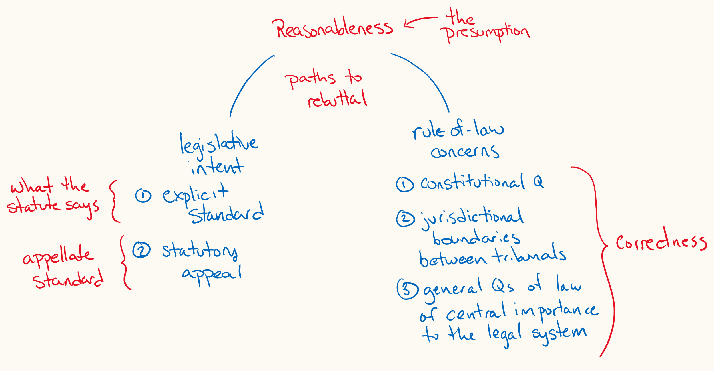

Early impressions from Canada v Vavilov

Here are some early thoughts on Canada v Vavilov. In this decision, the Supreme Court of Canada presented a revised approach for how courts should determine the standard of review in judicial review.
There are two main takeaways: 1) the new framework for selecting the standard of review, and 2) an in-depth explanation of what reasonableness review means, especially its relationship to reasons.
But above all of this is a clear expression of how the Court sees the relationship between the administrative state and the judiciary. The Court sees this as a trade—of justification by administrative decision makers in exchange for respect from the courts.
On the one hand, courts must recognize the legitimacy and authority of administrative decision makers within their proper spheres and adopt an appropriate posture of respect. On the other hand, administrative decision makers must adopt a culture of justification and demonstrate that their exercise of delegated public power can be “justified to citizens in terms of rationality and fairness”
The Vavilov framework
The starting point is a presumption of reasonableness that can be rebutted by either explicit legislative direction or by one of three rule-of-law concerns.
Legislative direction can come in two forms:
- the statute can explicitly prescribe the standard of review to be used, or
- the statute can contain a statutory right of appeal.
If there is a statutory right of appeal, the court will apply the appellate standards of review from Housen.
The three categories of questions that rebut the presumption of reasonableness because of rule-of-law concerns are:
- “constitutional questions,”
- “general questions of law of central importance to the legal system as a whole,” and
- “questions related to the jurisdictional boundaries between two or more administrative bodies.”
That’s it. A presumption of reasonableness review with five paths to rebuttal. The Court has completely discarded the “contextual inquiry” from Dunsmuir (and previously, Pushpanathan). An assessment of expertise is “no longer relevant to a determination of the standard of review.” Privative clauses “serve no independent or additional function in identifying the standard of review.” The Court has eliminated true questions of jurisdiction as a category that would attract correctness review. And, the Court affirmed that inconsistency, discord, or disagreement within a tribunal does not warrant correctness review.
In 2022, the Court added a sixth category warranting correctness review: when courts and an administrative body share concurrent first-instance jurisdiction over a question of law.
Robust reasonableness
The Court presents a quite robust reasonableness review and a heightened emphasis on reason-giving.
Here, you’ve just got to read the decision, I think. It describes a relationship, a feeling, an attitude—what reasonableness review should feel like. But I’ll pull out some quotes that highlight this feeling for me.
Paragraph 80, on what reason-giving does for the reason-giver (citations removed):
The process of drafting reasons also necessarily encourages administrative decision makers to more carefully examine their own thinking and to better articulate their analysis in the process. This is what Justice Sharpe describes—albeit in the judicial context—as the discipline of reasons.
Paragraph 81, on the primacy of reasons within the reasonableness review:
The starting point for our analysis is therefore that where reasons are required, they are the primary mechanism by which administrative decision makers show that their decisions are reasonable—both to the affected parties and to the reviewing courts. It follows that the provision of reasons for an administrative decision may have implications for its legitimacy, including in terms both of whether it is procedurally fair and of whether it is substantively reasonable.
Paragraphs 83–84, on the attitude or posture that the reviewing court should adopt when doing reasonableness review and the trade of justification for respect that I mentioned above (citations removed):
It follows that the focus of reasonableness review must be on the decision actually made by the decision maker, including both the decision maker’s reasoning process and the outcome. The role of courts in these circumstances is to review, and they are, at least as a general rule, to refrain from deciding the issue themselves. Accordingly, a court applying the reasonableness standard does not ask what decision it would have made in place of that of the administrative decision maker, attempt to ascertain the “range” of possible conclusions that would have been open to the decision maker, conduct a de novo analysis or seek to determine the “correct” solution to the problem. ...
As explained above, where the administrative decision maker has provided written reasons, those reasons are the means by which the decision maker communicates the rationale for its decision. A principled approach to reasonableness review is one which puts those reasons first. A reviewing court must begin its inquiry into the reasonableness of a decision by examining the reasons provided with “respectful attention” and seeking to understand the reasoning process followed by the decision maker to arrive at its conclusion.
Paragraph 86, emphasizing that a reasonable outcome is not good enough:
an otherwise reasonable outcome also cannot stand if it was reached on an improper basis
Paragraph 93, on reasons as an avenue for expertise, as part of the dialogue between the administrative state and the courts:
In conducting reasonableness review, judges should be attentive to the application by decision makers of specialized knowledge, as demonstrated by their reasons. Respectful attention to a decision maker’s demonstrated expertise may reveal to a reviewing court that an outcome that might be puzzling or counterintuitive on its face nevertheless accords with the purposes and practical realities of the relevant administrative regime and represents a reasonable approach given the consequences and the operational impact of the decision.
Paragraph 96, emphasizing that courts cannot save what would otherwise be a reasonable decision if it is based in flawed reasoning (citations removed):
Even if the outcome of the decision could be reasonable under different circumstances, it is not open to a reviewing court to disregard the flawed basis for a decision and substitute its own justification for the outcome. To allow a reviewing court to do so would be to allow an administrative decision maker to abdicate its responsibility to justify to the affected party, in a manner that is transparent and intelligible, the basis on which it arrived at a particular conclusion. This would also amount to adopting an approach to reasonableness review focused solely on the outcome of a decision, to the exclusion of the rationale for that decision.
Dialogue
I’ve already situated administrative reason-giving above in the context of a dialogue between the administrative state and the judiciary. This decision also presents the importance of communication from the courts to the administrative state in that dialogue. The decision presents courts as “managers”, even within a reasonableness review.
Paragraph 132 especially highlights this, in the context of resolving persistent discord within a tribunal:
While we are not of the view that such a correctness category is required, we would note that reviewing courts have a role to play in managing the risk of persistently discordant or contradictory legal interpretations within an administrative body’s decisions. When evidence of internal disagreement on legal issues has been put before a reviewing court, the court may find it appropriate to telegraph the existence of an issue in its reasons and encourage the use of internal administrative structures to resolve the disagreement. And if internal disagreement continues, it may become increasingly difficult for the administrative body to justify decisions that serve only to preserve the discord.
Degrees of deference
The Court continues to describe reasonableness review as a single standard: “elements of a decision’s context do not modulate the standard or the degree of scrutiny by the reviewing court.” However, I am still not convinced that this is descriptively accurate. Even aspects of this decision seem to reveal varying degrees of scrutiny. Paragraph 132, just quoted directly above, contemplates that internal disagreement “may become increasingly difficult” to justify. The Court also says, “Where the impact of a decision on an individual’s rights and interests is severe, the reasons provided to that individual must reflect the stakes.”
The most confusing section of this decision for me was at paragraphs 115–124, discussing how reasonableness review should be applied to questions of statutory interpretation. A court is not to do a de novo analysis, but the court also is not to allow the administrative decision maker to “adopt an interpretation it knows to be inferior— albeit plausible—merely because the interpretation in question appears to be available and is expedient.” And sometimes, the “correct” interpretation will just happen to “become clear” to the reviewing court (although not doing a de novo analysis). I’d love some help understanding this.
Notes
1. ↑ See Society of Composers, Authors and Music Publishers of Canada v. Entertainment Software Association, 2022 SCC 30 [Society of Composers].
2. ↑ I’ve been helped by various Twitter threads I’ve encountered throughout the day: Mary Liston, Caroline Mandell, Adil Abdulla.
3. ↑ Canada (Minister of Citizenship and Immigration) v. Vavilov, 2019 SCC 65 [Vavilov].
4. ↑ See ibid at para 14.
5. ↑ See ibid at paras 16–17.
6. ↑ Housen v Nikolaisen, 2002 SCC 33.
7. ↑ Note, the Court has shed the requirement that these questions also be outside the specialized expertise of the tribunal.
8. ↑ Dunsmuir v New Brunswick, 2008 SCC 9.
9. ↑ Pushpanathan v Canada (Minister of Citizenship and Immigration), [1998] 1 SCR 982, 160 DLR (4th) 193.
10. ↑ Vavilov, supra note 3 at para 31.
11. ↑ Ibid at para 49.
12. ↑ See ibid at paras 65–68.
13. ↑ See ibid at paras 71–72. See also ibid at para 132.
14. ↑ Society of Composers, supra note 1.
15. ↑ See Mary Liston, “VERY ROBUST reasonableness review as the new norm...” (19 Dec 2019 at 11:50), online: Twitter https://twitter.com/mary1liston/status/1207749969903419393
16. ↑ Vavilov, supra note 3 at para 89.
17. ↑ Ibid at para 133.